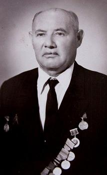
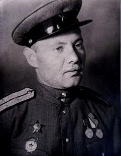
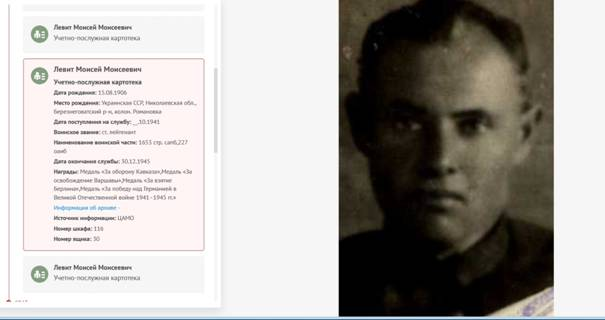

|
Левит Моисей Моисеевич
Автобиография.
|

|
|
Левит
Моисей Моисеевич
|
Я, Левит Моисей Моисеевич
родился в 1906 году в колонии Романовка Березнеговатского района
Николаевской области, в семье бедняка-приказчика. Отец мой умер в 1906
году, а я родился после его смерти. Мать умерла через три года, а я
воспитывался у старого дедушки-бедняка-каменщика. С 8 до 12 лет учился и окончил 4-х классную
сельскую школу в колонии Романовка. С 15 лет ушёл работать батраком по найму к кулакам в Романовке и в других
немецких колониях, где работал до 1923 года. С 1923 года по 1925 год работал рабочим сыроварни сельхоз. товарищества кол.
Романовка. С 1926-1927 г. зав.
сельбудом и секретарём Романовской
комсомольской ячейки ЛКСМУ. После
этого выехал в г.Днепропетровск, где работал с 1927-1929 г.
бетонщиком жилстроя завода имени Петровского. С 1929-1931
работал кочегаром и пом. машиниста холодильников фабрики-кухни заводе Петровского. В 1931 г.был выдвинут горкомом
комсомола своим представителем в
горздрав г.Днепропетровска, где и работал инспектором до 1934г. В
том же году постановлением обкома комсомола был направлен своим
представителем в Днепропетровский
областной совет профсоюзов где и работал до августа 1936 г.
В августе 1936г. по постановлению парт. группы облсовпрофа был направлен председателем
Днепропетровского обкома союза городских предприятий, после переименованный в обком союза
местной промышленности, где я
избирался и работал до августа 1941 года. С 1941 г. до января 1946 года
служил в рядах Советской армии –политруком, зам. командира
роты по политчасти и командиром
взвода сапёрных частей. В связи с
тем , что семья после эвакуации переехала в г. Херсон, я после демобилизации прибыл в
г.Херсон и 3 мая 1946 года поступил на работу в УВС
-160, после переименованный в стройтрест-45, где до 1948 года работал
экспедитором в отделе
снабжения. С 1948 года до января 1958 года в Жкка ст. домоуправом а потом политруком интерната. В
комсомол поступил в 1924
году. В партию поступил в 1926 году и на бюро
Березнеговатского райкома партии был утверждён, но районное собрание долго не
собиралось в связи с
переездом в город
Днепропетровск мне пришлось
вновь в 1928 году быть кандидатом, а в 1929 году был принят членом партии Кайдакским райкомом гор. Днепропетровска. В члены профсоюза поступил в 1924 г. В 1925-1926 году был
избран членом пленума Березнеговатского райкома комсомола. В 1927-1929 гг. был избран зав. экономическим отделом комсомольской ячейки жилстроя
завода Петровского. С 1929-1931 г.
был избран и работал
секретарём комсомольской ячейки фабрики-кухни завода имени
Петровского г.Днепропетровска. С
1931-1934 г. я был членом пленума Днепропетровского горкома
комсомола и председателем К.К. при
горкоме комсомола . С 1931-1933 г.
также был секретарём парт.
ячейки Днепропетровского горздрав.отдела. В1938 году на Всесоюзном съезде был избран кандидатом в члены ЦК союза городских предприятий. Начиная с 1929-1933 систематически направлялся уполномоченным Днепропетровского обкома партии и ЦК КПБУ по районам и сёлам по
организации коллективизации и хлебозаготовкам. В 1930 г. поступил учиться на рабфак при Днепропетровском транспортном институте, где проучился два года. В 1932 г. поступил на
годичные подготовительные курсы
при металлургическом институте,
которые закончил и был
зачислен на дневной первый курс
института. По ряду объективных
причин в работе и в связи с
материальным положением в семье был вынужден оставить учёбу. За время работы в стройтресте -45 избирался и работал 8 лет секретарём парт. организации ЖКХ и
8 лет до 1958 г. избирался
и работал членом постройкома стройтреста-45.
М. Л
е в и т.
Мои
воспоминания, как участника Великой Отечественной войны.
1941-1945 годов.
|

|
|
Левит
Моисей Моисеевич
|
В 1941 году я, как и
многие другие, был призван в ряды Советской Армии - политруком роты 1653-го отдельного
сапёрного батальона - Северо-Кавказского
фронта. Этот период был для
нашей армии и для всего советского народа нашей страны очень тяжёлым. После внезапного нападения
гитлеровских армий 1941-1942 г. Советская армия держала активную оборону,
с боями отступала, выматывая вражеские силы. Вначале 1942 года наш 1653–й
сапёрный батальон был направлен в район г,Ейск с заданием минировать
берега Азовского моря. Я с группой сапёров ( примерно полроты) находился в 40-50 км. от г. Ейск, где
минировали берега моря, выполняя задание нашего командования. Примерно,
через пару недель прибыл к нам нарочный с г.Ейска от комиссара батальона
с приказом немедленно подняться бойцам
с хозяйством и прибыть в г.Ейск,
срок – 3 часа. Чувствуя,
что тут какая-то угроза, мы быстро собрались. Взяли с собой взрывчатку,
мины- всё это в подводы и в указанное время прибыли на ст. Ейск. Нас там ждал комиссар батальона. Были подготовлены
железнодорожные вагоны, куда сходу мы погрузились, а гужевой транспорт с
взрывчаткой отправился своим ходом с указанием маршрута на Майкоп Сумерки
настали и поезд тронулся в направлении ст. Майкоп, но проехав несколько станций, поезд
остановился на каком-то полустанке. Оказалось, что впереди
железная дорога перерезана и
захвачена немцами. Состав должен был вернуться назад в г. Ейск. Мы тут же
ночью выгрузились, без всякого подвижного транспорта, и комиссар решил
двигаться через гору, обойдя центральные дороги добираться до г. Майкопа, куда за день до этого убыл наш батальон. Шли дни и ночи, но в
Майкоп добрались и застали там свой 1653-й сапёрный батальон, у которого
уже было задание отходить за
отступающими частями в сторону г.Новороссийска и по пути – подрывать
мосты. Минировать и устраивать завалы на дорогах и узких проходах дорог
между горами. А немцы буквально по пятам шли за нами. Таким путём мы отступали. Почти не доходя до г. Новороссийска,
где уже были другие части, была подготовлена линия обороны. Наш батальон
был переведен на окраину города, там и началась горячая пора.
Противник, в то время имея ещё превосходство, прорвал оборону
и наши войска были вынуждены оставить г Новороссийск Наш 1653 саперный батальон был
расформирован и в сентябре я был направлен в 370 сапёрный батальон 216 стрелковой
дивизии 47 армии. Вот тут в горах
под Новороссийском, мы держали примерно 6 месяцев активную оборону в
тяжёлых условиях. Малочисленность
подразделений, минирование переднего края обороны, плохая доставка
продуктов, почти не было сала и
курева. Приходилось из-за нехватки людей не занимать проходы для
наступления. Из продуктов нас спасал только рис. Враг рвался к г. Туапсе,
чтобы отрезать нашу 47-ю армию и 18-ю армию. У нас сзади был Геленджик и
Чёрное море. Приезжал к нам тов.
Будённый, собрал наш комсостав, взбодрил, и говорил , что мы верим в победу над
врагом. После победы на Сталинградском
фронте, окружение и уничтожение более 300 тысяч немецких войск, на нашем
участке фронта - на северном Кавказе сразу стало легче
дышать и веселее. Появилось у нас пополнение: самолеты, автоматы и другое оснащение. В апреле 1943 г. от активной обороны
наша 47-я армия перешла в наступление,
вытеснили немцев с Кубани, освобождая при этом станции: Холмская,
Северная, Албинская, Крымская и многие другие. В ноябре 1943 года я был направлен
командиром сапёрного взвода в 116 отд. Гвардейский сапёрный батальон 10-
го гвардейского корпуса 4-ого Украинского фронта в р-он Б. Лепетихи на Днепре. Немецкая армия здесь удерживала сильный плацдарм, они
стремились соединиться с крымской группой немецких войск, отрезанных 4-м
Украинским фронтом, где командующим
был Маршал Советского Союза – Толбухин. 4 месяца постоянные бои,
ежедневное минирование и
разминирование, легкая контузия и через неделю – опять в строю. В конце
февраля месяца 1944 года наш сапёрный
батальон получил приказ
подготовить всю саперную снасть для начала переправы через Днепр. Начался прорыв с Никопольского
плацдарма 3-его Украинского фронта. Чувствовалось,
что этими днями немцы будут отброшены со своего плацдарма на ту сторону Днепра, в плавни и в сторону сёл: Дутчаны, Качкаровка. Немцы
были вытеснены в начале марта 1944 г. Я со
своим сапёрным взводом на 10-ти резиновых лодках,
по приказу генерал-майора, в 12 часов ночи, первыми, с берега Б.Лепетихи начали переправу через Днепр на противоположный берег. Стрелки сразу не прибыли. А прибыла рота с
противотанковым оружием, я же
получил приказ произвести там разведку дорог на предмет минирования. Мы
только вышли на противоположный берег, как наткнулись на группу немецких автоматчиков,
которые направлялись вдоль берега Днепра. Нам пришлось
вступить в неравный бой. Но генерал, который руководил операцией по
переправе, быстро оценил положение и дал команду спустить на берег 45 мм. пушки и прямой наводкой открыть огонь
по немецким автоматчикам. А тут, в
скором времени , подоспела вторая партия лодок со стрелковой ротой с
автоматчиками и ручными пулемётами . В течении двух часов боя немецкие автоматчики были разбиты, а
часть из них была взята в плен- это оказался немецкий заслон в количестве 60 автоматчиков. После этого я провёл разведку дороги и
переправился обратно на тот берег продолжать переправу наших частей и техники. Все
мы спокойно на берегу готовили плоты для переправы на противоположный
берег пушек, и вдруг внезапно на переправу обрушился миномётный огонь. В течении 15 минут обстрела были убиты и ранены
многие, мне посчастливилось, я оказался невредим. После форсирования Днепра наш
сапёрный батальон перешёл в состав 5-й ударной армии 3-его Украинского
фронта. С боями мы освободили г. Берислав, форсировав Днепр со стороны Цурюпинска.
Вскоре мы вошли в г.Херсон. После г. Херсона повернули на Снегирёвку,
Калининск, далее освободили
г.Николаев, Одессу, за что нашему 116-му отд.сапёрному батальону присвоили название – Одесский. Дальше мы пошли на Молдавию. Освобождали г. Тирасполь, а правее в р-оне Григориополя
немцы занимали небольшой плацдарм
на нашей стороне Днестра.
Примерно в мае месяце 1944 г.
командование 5 –й ударной армии бросило
туда стрелковый
корпус, чтобы выбить противника
с этого аппендицита, добавив сапёрную роту и наш взвод. На плацдарме были
две деревни, а дальше лес и берег Днестра. Вроде немцев там не было. Но они нам устроили ловушку. 5 дней и 5 ночей мы
были в окружении. Корпус много
потерял людей, в том числе и наших сапёров.
Меня обсыпало мелкими осколками от
обстрела немецких танкеток.
Командиру корпуса удалось
установить связь с нашими войсками и с помощью наших катюш, мы с русским ( ура ) прорвались. Когда мы прибыли в наш батальон, меня еле узнали. После 10 дней в медсанбате я
вернулся в строй. Примерно в конце
июля 1944 г. наша 5 ударная армия 3 укр.
Фронта, куда входил и наш сапёрный батальон, пошли
на штурм Ясско-Кишинёвской
группы, потом мы освободили г Кишинёв и двинулись к
румынской границе. Дороги были усеяны трупами немецких и румынских солдат, валялась их
хвалённая техника, а пленные шли тысячами в наш тыл .
Не доходя до румынской границы наша 51 ударная
армия получила приказ вернуться в г. Кишинёв.
Были поданы ж-дорожные вагоны и нас перебросили в Западную
Украину, а оттуда на Польшу в распоряжение 1-го Белорусского фронта, где в то время командовал Маршал
Советского Союза тов. Жуков. Началась подготовка к решающему удару. Были сконцентрированы большие силы всех
родов войск. Моральное состояние бойцов было очень высоко. В начале января 1945 г. на нашем
участке фронта началось
генеральное наступление. С большой быстротой отбрасывали фашистских захватчиков с польской земли . 31
января мы вступили на немецкую землю. С
боями занимали
немецкие города и
сёла. Скоро мы вышли к реке Одер –
это примерно 40-50 км. от Берлина. С хода, под большим огнём противника, наши части заняли плацдармы в 200-300 метрах от берега Одера. Гитлеровцы бросали все силы, вплоть до женских батальонов, положивших свои
головы. Нам там тоже было нелегко
и это дёшево не обошлось. Было и у нас много убитых и раненых. И я получил сильную контузию бомбой или
снарядом, меня засыпало, осталась торчать одна голова, я потерял
сознание. Меня вытащили и
я очутился в армейском
госпитале. А многие мои товарищи
по оружию навсегда остались там под землёй. Полтора месяца я лежал в
госпитале, но когда наша часть готовилась пойти в наступление на гитлеровскую
берлогу-Берлин, командир батальона
подполковник Стрелениченко и его
заместитель тов.Рисев приехали ко мне в госпиталь, чтобы забрать меня в наш батальон. Но я ещё ходил на костылях. Со слезами на глазах я упросил начальника
госпиталя отпустить меня. С тяжёлыми боями дошли мы до Берлина. Но 51-я ударная армия дальше
Берлина не пошла . Наш командир
5-й ударной армии
генерал-полковник т. Берзарин был назначен первым комендантом г. Берлина. По приказу командующего 1-м Белорусским фронтом т. Жукова, я демобилизовался в 1946 г.
и приехал в г.Херсон.
М. Левит

Левит Моисей Моисеевич
Год рождения: 15.08.1906
Место рождения: колония
Романовка, Березнеговатского района,
Николаевской области, Украина.
Воинское звание: старший лейтенант; гв.
ст. лейтенант; ст. лейтенант
Дата поступления на службу 25.10.1941
Место призыва Ставропольский ГВК, Ставропольский край, г.
Ставрополь; Ставропольский КВК, Ставропольский край
Должности : заместитель командира роты по
политической части
Награды:
Ордена:
« Красной Звезды» 01.02.1945
« Отечественной войны II степени » 06.04.1985
Медали:
«За боевые заслуги» 24.03.1943
«За оборону Кавказа» 01.05.1944
«За взятие Берлина»
«За
освобождение Варшавы»
«За победу над Германией в Великой
Отечественной войне 1941–1945 гг.»
Из наградного листа:
За
короткий срок службы, с октября месяза 1942
года, в 370 отдельном саперном батальоне, 216 стрелковой дивизии, работая
в должности заместителя командира роты по политической части, тов. Левит
М.М. показал образцы воспитательной работы. Беспрерывно вращаясь среди
бойцов, он сумел обеспечить партийно-политическую работу роты, что
способствовало выполнению поставленных задач командованию.
Во время подготовки дивизии к
наступательным действиям, батальону была поставлена задача построить мосты через горную реку Абин
и жердевую дорогу для подвозки боеприпасов и продуктов к передовой линии.
Тов. Левит в этом задании добился высокой производительности, благодаря
чему мосты и дорога были построены вовремя и качественно.
Во время наступления дивизии с 12
января 1943 года в районе поселка Эреванский, тов Левит лично сам
несколько раз ходил в разведку переднего края обороны противника и
руководил работой саперов по проделыванию проходов в инженерных
заграждениях противника и бойцы его роты показали образцы мужества и
отваги в борьбе с немецкими аккупантами.
Тов
Левит энергичный и смелый командир, хороший агитатор.
Достоин награждению медалью «За боевые заслуги»
Командир
370 ОСБ
майор
Белоусов
18.02.1943г.
Из наградного листа:
Старший
лейтенант Левит, работая начальником мастерских батальона, проявил
исключительную находчивость и инициативу в обеспечении необходимыми материалами
для строительства мостов.
При отсутствии в батальоне транспорта Гв.ст.лейтенант Левит
выполнил задание по изготовлению поковок для мостов, которое было дано
командованием бригады. При преследовании противника, тов Левит было поручено двигаться с батальонным
обозом, и не смотря на то что дорога была забита, тов
Левит водил обоз своевременно с необходимым имуществом.
За проявленную находчивость по
изготовлению поковок для мостов и своевременного привода обоза батальона
представляю к правительственной награде ордену «Красная Звезда».
Командир Стрельниченко
31
января 1945г.
Данные
из УПК (учётно - послужной карты, портал
"ПАМЯТЬ НАРОДА").
Левит Моисей Моисеевич
Учетно-послужная картотека
Дата рождения: 15.08.1906
Место рождения: Украинская ССР, Николаевская обл., Березнеговатский р-н, колон. Романовка
Дата поступления на службу: __.10.1941
Воинское звание: ст. лейтенант
Наименование воинской части: 1653 стр. сапб,227 оаиб
Дата окончания службы: 30.12.1945
Награды: Медаль «За оборону Кавказа»,Медаль «За освобождение Варшавы»,Медаль «За взятие
Берлина»,Медаль «За победу над Германией в Великой Отечественной войне
1941–1945 гг.»
Информация об архиве -
Источник информации: ЦАМО
Номер шкафа: 116
Номер ящика: 30
Дата рождения
15.08.1906; __.__.1906
Место рождения
Украинская ССР
Николаевская область Березнеговатский район
колхоз Романовка; Украинская ССР, Николаевская обл., Березнеговатский
р-н, с. Колония Романовка; Украинская ССР, Николаевская обл., с.
Романовка; Украинская ССР, Николаевская обл., Березнеговатский
р-н, колон.
Романовка; Украинская ССР, Николаевская обл., Полон.
Романовка; Украинская ССР, Одесская обл., г. Одесса
(Николаевская обл., Березниговатский р-н, д. Рашановка); Украинская ССР, Николаевская обл., Березнеговатский р-н
Дата поступления на службу
__.10.1941; __.__.1941; 25.10.1941
Место призыва
Ставропольский ГВК, Ставропольский край, г. Ставрополь; Ставропольский КВК, Ставропольский край
Воинское звание
старший лейтенант; гв.
ст. лейтенант; ст. лейтенант
Воинская часть
61 исапбр (61 исапбр); 61 исбр (61 исбр); 216 сд 56 А СКФ (216 сд, 56 А СКФ, 56 А, СКФ); 1653 стр. сапб (1653 стр. сапб); 227 оаиб (227 оаиб); 4 УкрФ (4 УкрФ); 61 истрбр 5
Уд. А (61 истрбр,
5 Уд. А); Упр. 4 УкрФ (4 УкрФ);
1653 осапб СКФ (1653 осапб СКФ,
1653 осапб,
СКФ); 61 исапбр 5 Уд. А (61 исапбр,
5 Уд. А)
Наименование
награды
Орден
Отечественной войны II степени
Медаль «За оборону Кавказа»
Орден Красной Звезды
Медаль «За взятие Берлина»
Медаль «За боевые заслуги»
Медаль «За освобождение Варшавы»
Медаль «За победу над Германией в Великой Отечественной войне 1941–1945
гг.»
Наградные
документы:
Левит
Моисей Моисеевич
Медаль
«За боевые заслуги»
Наградной
документ
Дата
рождения: __.__.1906
Дата
поступления на службу: __.__.1941
Место
призыва: Ставропольский КВК,
Ставропольский край
Воинское
звание: ст. лейтенант
Воинская
часть: 216 сд 56 А СКФ
Даты
подвига: 12.01.1943-17.02.1943
Наименование
награды: Медаль «За боевые заслуги»
Дата
документа: 24.03.1943
Приказ
подразделения
№: 6/н от: 24.03.1943
Издан: 216 сд
56 А Северо-Кавказского
фронта
Информация
об архиве+
Левит
Моисей Моисеевич
Медаль «За оборону
Кавказа»
Наградной
документ
Дата
рождения: __.__.1906
Воинское
звание: гв.
ст. лейтенант
Кто
наградил: Президиум ВС
СССР
Наименование
награды: Медаль «За оборону Кавказа»
Дата
документа: 01.05.1944
Информация
об архиве -
Архив: ЦАМО
Картотека: Картотека награждений
Расположение
документа: шкаф 51, ящик 5
Левит
Моисей Моисеевич
Орден
Красной Звезды
Наградной
документ
Дата
рождения: __.__.1906
Дата
поступления на службу: __.10.1941
Место
призыва: Ставропольский ГВК,
Ставропольский край, г. Ставрополь
Воинское
звание: гв.
ст. лейтенант
Воинская
часть: 61 исапбр
Наименование
награды: Орден Красной Звезды
Приказ
подразделения
№: 9/н от: 01.02.1945
Издан: 61 исбр
Информация
об архиве -
Архив: ЦАМО
Фонд
ист. информации: 33
Опись
ист. информации: 686196
Дело
ист. информации: 5327
Левит
Моисей Моисеевич
Орден
Отечественной войны II степени
Документ
в юбилейной картотеке
Дата
рождения: __.__.1906
Место
рождения: Украинская ССР, Николаевская
обл., Березнеговатский р-н, с.
Колония Романовка
Наименование
награды: Орден Отечественной войны II
степени
Номер
документа: 81
Дата
документа: 06.04.1985
Автор
документа: Министр обороны СССР
Информация
об архиве -
Архив: ЦАМО
Картотека: Юбилейная картотека награждений
Расположение
документа: шкаф 33, ящик 19
Левит
Моисей Моисеевич
Медаль
«За взятие Берлина»
Наградной
документ
Воинское
звание: ст. лейтенант
Воинская
часть: 61 исбр
Наименование
награды: Медаль «За взятие Берлина»
Информация
об архиве -
Архив: ЦАМО
Фонд
ист. информации: 30388
Опись
ист. информации: 2
Дело
ист. информации: 42
|